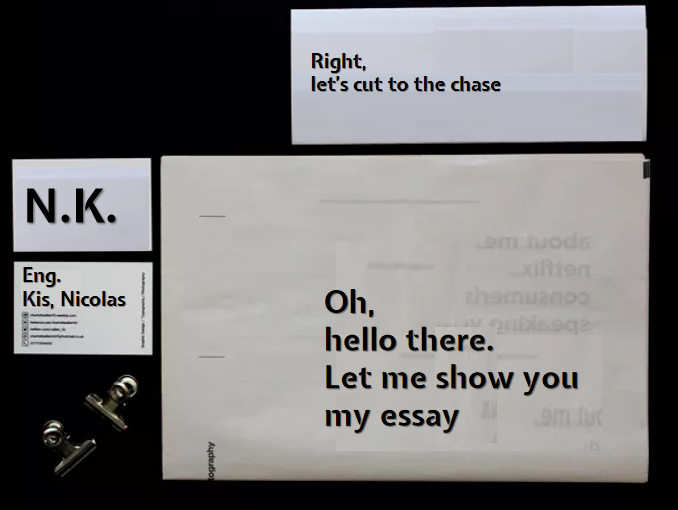

Kis
Nicolas
Engineer
-
Worked with tecnologies like .NET, PostgreSQL, OpenShift, BitBucket, and other Atlassian tools, to mantain a SCRUM Methorology workaround with the team.
-
Deep-dive into C++ and SQL Server. Worked side by side with a senior C++ developer.
-
Studied in Málaga, Spain.
-
I experienced working with suppliers, senior managers, collegues from all over the world. Worked in Germany and Ecuador.
-
Where therory of things are explained in detailes, until you understand... or understand.
-
Bilingual bachelor in science and letters - German and English
Timeline
Skills
.NET (overall)
C++
SQL Server
PostgreSQL
JavaScript
CSS
HTML
CSS
Agile Methodology
Linux
"I dont know everything... But I know who to ask."
Miscellaneous Interesting Things
More About me
I wish every day to face new challenges to constantly exercise my mind. I choose the path of the alternative and proactive point of view and the pursuit of the most effective solution. I like to know that my work can reach someone, and it makes me happy to constantly search for knowledge. I have managed many tasks within my work experience, and the result of my efforts I could always see reflected in the response of my superiors, always with gratitude and always positive. I am an introverted person at the beginning, but I can quickly adapt to changes.
"Mr. Kis has four years of programming experience, two of which as a .NET developer. His studies as a computer science engineer allowed him to learn more about other subjects. His thesis was the development of a program to interpret the results of an electrocardiogram in music. For this he used tools like Python, REST-Services, Machine Learning and SQL. His technical knowledge is remarkable, but his pro-activity and dedication to the projects he is working on cannot be ignored. He shows a keen interest in new challenges and always looks for an alternative perspective to find the most efficient solution. He is always friendly and adaptable easy to work in different work environments. Teamwork is easy for Mr. Kis, even with international team members. He is always looking for new knowledge. He is characterized by good communication with customers and superiors, with whom he achieves high-quality results through constructive discussions, which then means customer satisfaction."
Papers

"Check my Final Degree Project (written paper)!"